| 项目 | 内容 |
|---|---|
| 参赛作品名称 | FAR-Lab——证据约束的科学假设生成与研究计划设计系统 |
| 参赛选题 | 赛道一（科学发现）· 方向 1-A：科学假设生成与研究计划设计（题目编号 XH-202619） |
| 作品简介（300 字内） | FAR-Lab 是面向“科学发现”方向的证据约束型 AI 科研系统：围绕一个科学问题，系统在真实文献证据约束下生成多条可区分、可证伪的候选假设，经确定性核验与成对锦标赛比较筛选后输出可执行研究计划，并由实验判决与研究者反馈驱动因果化修订，形成“问题→证据→假设→计划→验证→修订”的完整科研闭环。系统恪守“LLM 提案、确定性处置、人类裁决”：主张与来源快照逐字绑定、统计判决由预注册规则机械推导、全部中间产物入单一权威库留痕，导出物为可第三方独立校验的可复现包。作品基于国产开源大模型 Qwen（经阿里云百炼平台调用）构建，模型控制平面协议无关、全球模型可插拔。 |
| 使用 Qwen 大模型及 AI 技术说明（300 字内） | 系统智能平面的大模型任务——问题解析、证据主张抽取、多策略假设生成、批判与可证伪化、成对比较、研究计划草拟、修订建议——由模型控制平面统一调度；赛事路线经阿里云百炼 DashScope 适配器调用 Qwen 系列模型（默认 qwen-plus，qwen3.x 家族经能力注册协商启用 json_schema strict 结构化输出）。每次调用的提供方/模型/用量/请求与输出哈希均写入收据账本，故障转移语义确定（限速/超时/配额/5xx 可转移，400 类与无效输出永不转移）。系统另提供显式标识的离线确定性演示路线，用于无密钥环境的全流程界面验收，绝不冒充真实模型调用。 |
| 宣传视频链接 / 其他作品相关文件 |
far verify 独立校验 15/15、16/16 通过（含 120 张 live 收据核对，P17、P20）。面对一个科学问题，现有“直接问大模型”方法的核心不足是：生成内容与可核查证据之间没有结构性连接——引用常无法解析到真实文献（实测强模型直接作答的引用不受支持率高达 85.0%）、多条“候选假设”彼此只是措辞改写、结论无法被任何可观测结果判定对错、人的反馈进入不了下一轮生成。本作品希望解决的正是这四点：让每一条主张都能回指真实检索内容的逐字片段，让候选假设在机制层面真正可区分且逐条携带可证伪条件，让研究计划具体到可复核的执行步骤，让反馈与实验判决因果地改变后续输出。
已实现并经验证的功能包括：科学问题理解（研究对象/关键变量/已有认识/知识缺口的结构化解析）、证据组织（OpenAlex/arXiv/CrossRef/EuropePMC 真实检索 → 来源验证 → 主张抽取与逐字绑定 → 反证关系建模）、候选假设生成（多策略并行 + 负面条件化 + 聚类去重，每条含陈述/机制/依据/预测/不确定性）、假设比较筛选（确定性门禁 + 可证伪完整性检查 + 成对锦标赛 + 评分卡维度分解）、研究计划形成（可执行步骤、判别性决策规则、多重检验政策、可执行性确定性校验）、反馈修订（结构化专家反馈、研究者直接编辑、实验判决三条真实路径，均入同一因果修订链）、真实数据实验执行（Python sidecar 运行 sklearn/scipy，判决由预注册规则机械推导）与一键可复现导出（far verify 第三方独立校验）。
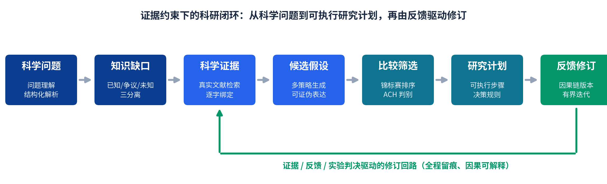
far verify 独立校验的可复现包（含 IMRaD 论文投影与全部收据）。| 科学判断环节 | 本作品实际采用的做法 | 采用该做法的理由 |
|---|---|---|
| 区分已有事实、文献解释与模型推断 | 主张（claim）只能由验证通过的来源快照逐字绑定生成（bindingStatus=verified，fail-closed）；模型推断只可作为候选假设进入假设层，永远不回写为事实；执行模式（LIVE/OFFLINE/RECORDED/SYNTHETIC）全界面显式标识。 | 证据断层是 LLM 科研系统最常见的失效；对象分层 + 信任级标记使“事实/解释/推断”在数据模型层面不可混淆。 |
| 将知识缺口转化为候选假设 | 问题理解阶段确定性地产出知识缺口清单；多策略生成器（证据条件化/机制驱动/矛盾驱动）以缺口与已验证主张为输入，跨运行记忆对重复方向施加负面条件化。 | 缺口显式化使生成有靶点；多策略 + 负面条件化抑制同质化。 |
| 保证候选假设可检验或可证伪 | 每条假设必须携带四字段证伪规格（可观测变量、对照/比较、阈值、决策规则）；批判与可证伪化阶段运行确定性完整性检查，缺项即列明。 | “无法判定对错的陈述”不是科学假设；结构化约束把可证伪性从文风变成字段。 |
| 保留反对证据和替代解释 | 反证关系（contradicts/weakens/fails_to_replicate/alternative_explanation）是一等公民对象，界面置顶呈现；假设卡保留替代解释与不确定性字段；导出包完整保留反证。 | 科学进步依赖证伪压力；删除不确定性等于制造虚假确信。 |
| 避免把候选假设写成已证实结论 | 假设状态机（候选→推进/否决/分叉）与措辞守卫；导出论文的局限性由真实计数合成；统计结论只由预注册决策规则机械推导（LLM 无权判定实验结论）。 | 语言层面的“确信膨胀”是评审重点扣分项；用机制而非纪律约束。 |
系统从问题文本中抽取研究对象、关键变量与约束来识别知识缺口：哪些信息已被文献覆盖（已有认识）、哪些存在冲突证据（争议）、哪些完全无覆盖（未知）——三者分离记录（P8 图 8 给出真实运行的中间结果）。用于约束假设的证据仅限于通过来源验证且与主张逐字绑定成功的文献内容；绑定失败的内容被 fail-closed 拒绝，不进入生成上下文。裁决逻辑上：与假设预测方向一致且达到预注册阈值的观测支持假设（提升置信，不改写文本）；方向相反或显著未达阈值的观测削弱或否定假设（触发因果修订链）；证据不足以覆盖问题主体时系统诚实弃权（evidence-insufficient 标记，拒绝生成假设，见 P10/P19 实录）。
| 科学资料或证据 | 本作品如何获得和使用 | 对假设生成的具体作用 | 已知局限 |
|---|---|---|---|
| OpenAlex 文献索引 | 问题理解派生查询词在线检索；记录入内容寻址不可变快照 | 提供问题域的文献覆盖与引用锚点 | 无密钥日配额受限（429 时按披露切换到 EuropePMC，同源适配器） |
| arXiv / CrossRef | 同上管线检索与元数据解析（DOI/题名匹配核验） | 补充预印本与精确文献定位 | 摘要粒度为主，全文需进入全文阶段 |
| EuropePMC | 生物医学域摘要检索（亦作评测基线的检索源） | 生物医学题的高密度证据 | 学科覆盖偏向生医 |
| 全文解析（arXiv LaTeXML / OpenAlex GROBID TEI） | 全文阶段按需拉取并结构化 | 主张抽取的段落级证据面 | 解析质量依赖上游转换器 |
| OpenML 真实数据集 | 实验执行腿真实获取（校验和/许可/谱系持久化，种子可复现切分） | 统计实验的真实观测来源 | 覆盖表格 ML 类验证，湿实验走预注册协议层（人工记录证据，绝不模拟执行） |
| 评测基准（MLR-Bench、预声明题集、重发现任务） | 同条件对比与裁判校准（P18/P19） | 不参与假设生成；仅用于评价 | 样本量小（5–6 题/任务），结论按小样本披露 |
evidence-insufficient，假设生成拒绝、计划跳过、导出诚实弃权说明；证据相互冲突 → 以反证关系对象保留双方，置顶呈现给研究者，不做单边抹除。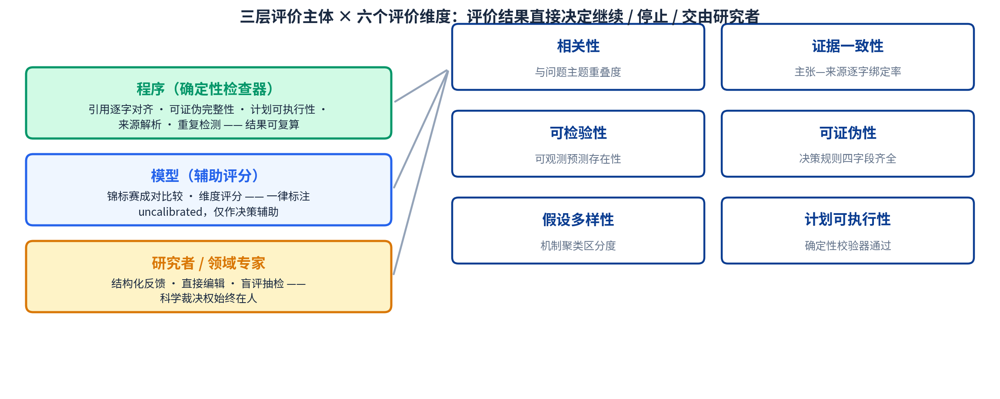
| 评价内容 | 具体评价方法 | 评价对象与样本 | 结果如何影响后续处理 |
|---|---|---|---|
| 相关性与证据一致性 | 确定性主题门 + 主张—来源逐字对齐机器验证 | 每次运行的全部来源与主张（如 170/170） | 对齐失败 fail-closed，内容不进入生成 |
| 可检验性 / 可证伪性 | 证伪规格四字段完整性确定性检查 | 每条代表假设 | 缺项列明并回写提示，不达标不进计划 |
| 假设多样性与相对优劣 | 机制聚类区分度 + 成对锦标赛（评分卡维度分解、GRADE 证据体评级、ACH 判别性证据交叉表，全部确定性计算） | 候选假设集（如 12→8 强） | 决定排序与进入计划的名额 |
| 研究计划可执行性 | 确定性可执行性校验器（缺失项 + 结构化警示） | 每份研究计划 | 不通过则回退并注明缺失 |
| 系统级质量（对照评测） | 预声明协议下与强基线同口径对比；裁判结论仅辅助且标注校准状态 | 预声明题集 6 题 / MLR-Bench 5 任务等 | 发现缺陷进入修复—回归锁定循环（P16） |
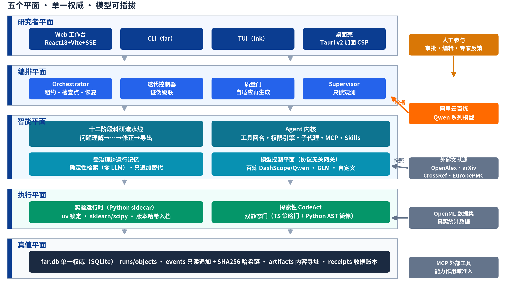
架构的三条关键裁决：一个阶段状态机、一个迭代决策者、一个权威存储。Supervisor 只做只读轨迹分析（每个阶段边界恰好一条幂等观测笔记），行动权永远在编排器与人类；跨运行记忆是 far.db 内的受治理投影，不存在第二记忆库；事件表由数据库触发器强制只读追加（UPDATE/DELETE 中止）并维护 SHA256 前向哈希链，用户主导的运行删除走特权路径并留墓碑记录。
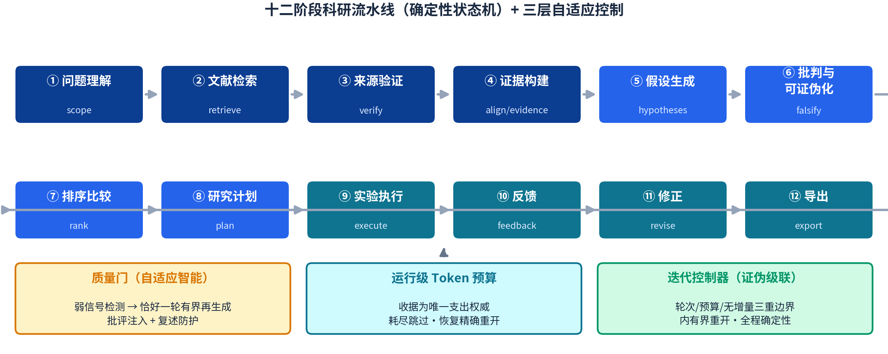
| 实际模块 | 输入 | 本作品的核心处理 | 输出 | 与下一模块的关系 |
|---|---|---|---|---|
| 科学问题理解 | 问题文本、附件/引文入口 | 结构化解析：对象、变量、约束、已知/争议/未知三分离 | 研究问题与作用域对象 | 派生检索查询词与缺口清单 |
| 证据获取与组织 | 查询词、外部文献源 | 真实检索→来源验证（解析+题名匹配）→主张抽取与逐字绑定→反证关系 | 已验证主张集、来源快照、证据关系 | 仅 verified 主张进入生成上下文 |
| 候选假设生成 | 知识缺口 + 已验证主张 | 多策略生成（证据条件化/机制驱动/矛盾驱动）+ 负面条件化 + 聚类去重 | 统一结构的候选假设集 | 代表假设进入核验筛选 |
| 假设核验与筛选 | 候选假设集 | 主题门/一致性核验/可证伪完整性检查 + 成对锦标赛 + 评分卡 | 排序结果与取舍记录 | ≤2 条进入研究计划 |
| 研究计划与反馈修订 | 入选假设及其证伪规格 | 计划生成（步骤/决策规则/多重检验政策）+ 可执行性校验 + 实验执行 + 因果修订 | 可执行计划、实验判决、版本链 | 反馈回到假设/计划，终态进入导出 |
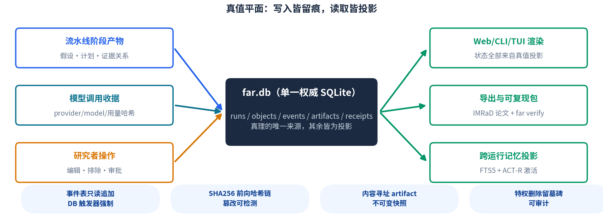
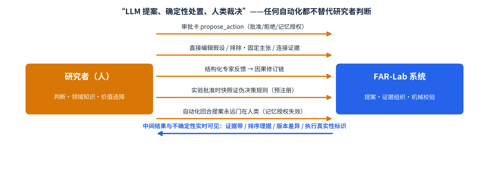
本作品不是一次性问答，原因有三：① 中间结果会真实改变后续生成——质量门把第一轮的批评注入再生成提示词并以确定性复述防护阻止换皮重提；迭代控制器在存在可执行证伪回路腿（实验→反馈→修正→再冻结→再实验）时于轮次上限/预算/无实质增量三重边界内有界重开。② 修订是因果的——每条 Revision 携带触发反馈 ID 与 causalReason，前后版本逐字段对比（VersionDiff）持久化并进入导出包（P14–P17 实录）。③ 失败是一等公民——路线失败（如配额耗尽）使运行进入失败态并可从断点恢复；证据不足使运行诚实弃权；二者都完整留痕而非静默重试。
| 内容 | 本作品实际做法 |
|---|---|
| 使用的 Qwen 模型与调用方式 | 经阿里云百炼 DashScope 适配器调用 Qwen 系列：默认 qwen-plus；qwen3.x 家族由能力注册表协商后启用 json_schema strict 结构化输出。路由由“赛事路线开关”一键切换，凭证经环境变量注入（材料中不暴露 API Key）。 |
| Qwen 承担的具体任务 | 问题解析、主张抽取、多策略假设生成、批判与可证伪化草案、成对比较裁判、研究计划草拟、修订建议——即全部语义推理任务；id 分配、枚举校验、状态迁移、统计判决由确定性代码承担（LLM 提案、确定性处置）。 |
| 一次生成时提供给模型的上下文 | 见图 7：科学问题（结构化）+ 已有证据（verified 主张）+ 反对证据（置顶）+ 关键约束 + 历史结果（受治理记忆）+ 反馈信息（实验判决/专家意见/质量门批评）。 |
| 结构化输出或格式约束 | 领域 zod 模式 + json_schema strict（按模型能力协商）；解析失败即纠正性重问并计数入收据，无效输出永不故障转移。 |
| 与检索、代码或其他工具的协作方式 | 检索/验证/对齐由确定性代码完成后再把证据送入模型；实验由 Python sidecar 执行；MCP 外部工具经能力作用域准入（只读证据精炼仅接 read 级服务器）。 |
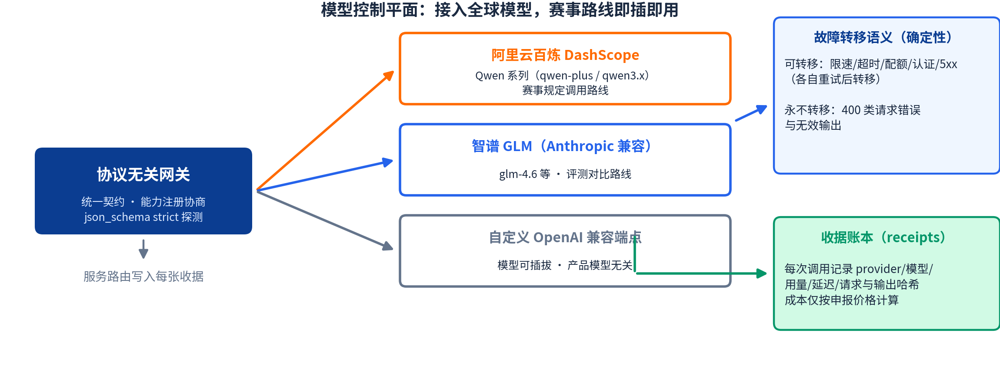
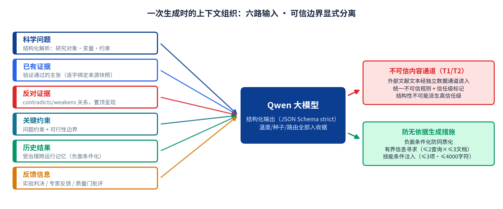
untrustedSourceContent 独立数据通道进入提示词并附加显式不可信规则；② 负面条件化——后续生成策略可见先前已提主张，跨运行记忆抑制重复方向；③ 有界信息寻求——首轮证据贫瘠时允许恰好一轮定向补检索（≤2 查询 × ≤3 文档），永不开放循环；④ 技能条件注入——按相关性选择 ≤3 项、≤4000 字符；⑤ 主题覆盖诚实门——证据不覆盖问题主体时拒绝生成（P19 实录）。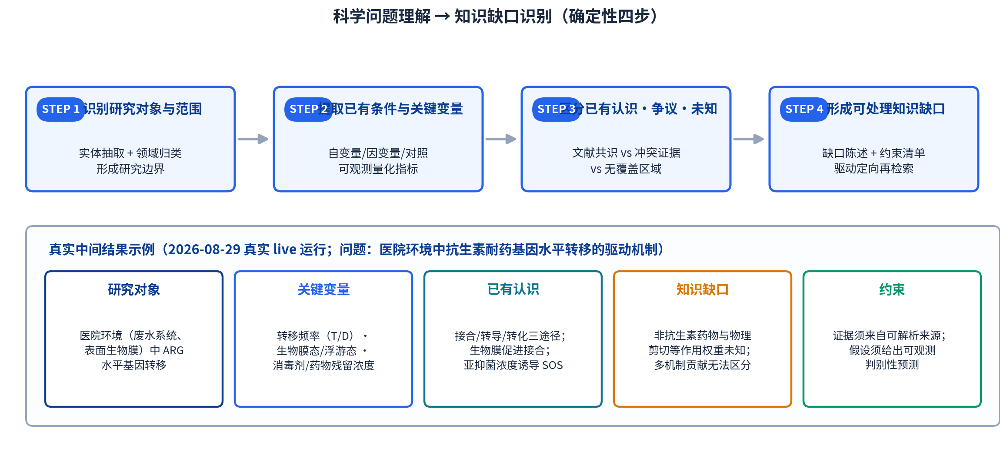
| 处理步骤 | 本作品实际做法 | 形成的中间结果 | 该结果如何用于假设生成 |
|---|---|---|---|
| 识别研究对象和范围 | 问题解析（模型）+ 领域归类与边界约束（确定性校验） | 研究对象、现象域、范围声明 | 限定证据检索域与假设适用域 |
| 提取已有条件和关键变量 | 变量/对照/可观测指标抽取，入结构化作用域对象 | 自变量/因变量/对照清单 | 假设预测必须锚定这些变量 |
| 区分已有认识、争议与未知内容 | 与已验证主张对齐：覆盖区=已有认识，冲突反证=争议，无覆盖=未知 | 三分离清单 | 争议与未知成为生成靶点 |
| 形成可处理的知识缺口 | 缺口陈述 + 约束清单；首轮证据贫瘠时触发恰好一轮有界补检索 | 知识缺口对象（可机读） | 直接作为各生成策略的输入条件 |
简例（完整案例见 P14–P17）：以“医院环境中抗生素耐药基因（ARG）水平转移的驱动机制”一题的真实 live 运行（2026-08-29）为例，系统解析得到——研究对象：医院废水系统与表面生物膜中的 ARG 水平转移；关键变量：转移频率（T/D）、生物膜态/浮游态、消毒剂与药物残留浓度；已有认识：接合/转导/转化三途径、生物膜促进接合、亚抑菌浓度诱导 SOS 反应；知识缺口：非抗生素药物与物理剪切等因素的作用权重未知、多机制贡献无法区分；约束：证据须来自可解析来源、假设须给出可观测判别性预测（图 9 下半部为该真实中间结果的可视化）。
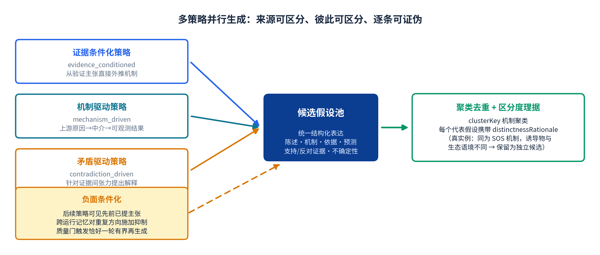
| 生成环节 | 本作品实际做法 | 该设计解决的具体问题 |
|---|---|---|
| 从知识缺口形成候选解释 | 以缺口对象 + verified 主张为条件的受约束生成 | 防止“泛泛而谈”的无靶点生成 |
| 生成多个可区分的候选假设 | 三策略并行 + 跨运行记忆负面条件化；clusterKey 机制聚类 | 同质化（同一机制换皮重提） |
| 将支持、反对证据纳入生成 | 生成上下文同时携带支持主张与置顶反证；假设字段显式绑定两类 claim id | 只挑顺证据的确认偏误 |
| 控制重复、空泛或不可检验输出 | 复述防护（确定性措辞比对）+ 可证伪完整性检查 + 质量门弱信号再生成 | 重复/空泛/不可判定输出 |
| 形成统一的候选假设表达 | 统一 zod 结构：陈述·机制·依据·假设前提·预测·支持/反对证据·不确定性·noveltyLabel·testability·区分度理据 | 候选之间不可比、不可机器核验 |
每条候选假设真实包含：核心陈述（statement）与机制链（mechanism：上游原因→中介过程→可观测结果）、形成依据（derivation：策略来源与推理）、支持与反对证据（supporting/counterClaimIds 绑定 verified 主张）、可检验预测（predictions：方向 + 阈值化表述）、替代解释与不确定性（uncertainties）、以及 noveltyLabel（如 novel_speculation / mixed）与 testability（testable_now / testable_with_data 等）两枚诚实标签。真实示例（同一运行）：同为 SOS 机制的两条假设，因诱导物（非抗生素药物 vs 抗生素）与生态语境（废水污染 vs 临床治疗）不同而被保留为独立候选，其区分度理据随对象持久化。
核验与筛选是一个级联而非一次打分：先做确定性的硬校验（主题相关性、证据一致性、可证伪完整性），再做相对比较（成对锦标赛与评分卡维度分解），最后由研究者保留裁决权。下图为一次真实 live 运行的级联数据。
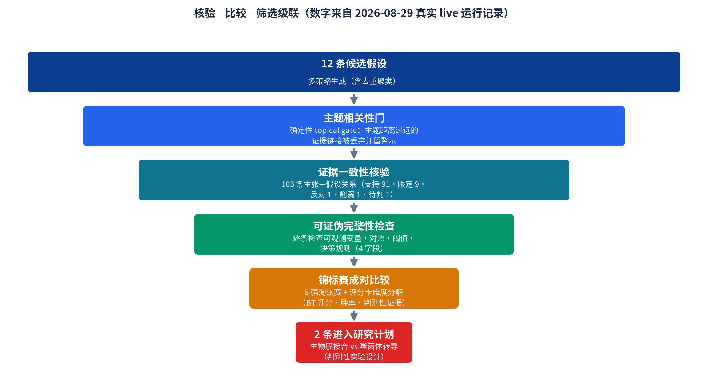
| 比较或核验内容 | 本作品如何判断 | 实际产生的处理结果 |
|---|---|---|
| 与科学问题是否相关 | 确定性主题门（主题重叠度阈值），对主张→假设链接逐条把关 | 主题距离过远的链接被丢弃并留可见警示（修复后 live 复测 21 条关系 0 错误） |
| 与已有证据是否一致 | 主张—来源逐字绑定机器验证 + 证据关系极性建模 | 103 条关系：支持 91 · 限定 9 · 反对 1 · 削弱 1 · 待判 1（如实保留少数派） |
| 是否存在冲突或错误引用 | 对齐失败 fail-closed；反证关系独立成对象置顶 | 引用不受支持率 0%（对照基线 85.0%） |
| 是否可检验、可证伪 | 证伪规格四字段确定性完整性检查 | 缺项逐条列明；第二轮六题完整性 100% |
| 是否与其他候选假设重复 | clusterKey 机制聚类 + 复述防护 | 重复候选合并为代表假设 + 区分度理据 |
| 是否值得进入研究计划设计 | 成对锦标赛（BT 评分/胜率）+ 评分卡维度分解 + ACH 判别性证据交叉表 | 8 强淘汰赛 → 前 2 名进入计划（判别性实验设计） |
保留/合并/降级/淘汰的全部决策留痕可查：合并——同一机制聚类的候选合并为代表假设；降级——证据支撑弱或判别优先级低的候选保留在池中但不进计划；淘汰——未通过可证伪完整性检查或被研究者否决者标记淘汰并保留原因。真实例子（同一运行的锦标赛记录）：在“消毒剂残渣筛选耐药外排泵突变体促进转移”与“管道剪切应力诱导膜囊泡包装耐药基因”两条候选的对阵中，裁判理据写明前者“在已确立的生物学机制（外排泵共选择）上接地更牢、方法学更稳健、决策规则更稳健”，故判前者胜——选择理由与原始对阵记录一并入档。最终该运行选择“生物膜介导接合”与“噬菌体介导转导”两条进入研究计划，因为它们之间可以设计判别性实验（P15）。
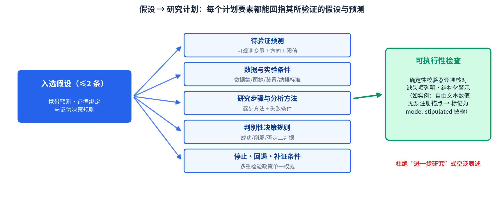
| 计划环节 | 本作品实际生成的内容 | 与候选假设的关系 |
|---|---|---|
| 明确待验证的预测 | 每条预测锚定可观测变量、方向与阈值（真实例：转移频率比 ≥10 且病毒/细菌 ARG 比 <0.1 支持生物膜主导） | 直接来自入选假设的 predictions 字段 |
| 确定所需数据、资料或实验条件 | 数据集/菌株/装置/纳排标准清单（真实例：CDC 生物膜反应器、临床供体菌株、选择性培养基） | 对应假设机制的作用条件 |
| 形成研究步骤和分析方法 | 逐步方法 + 每步失败条件（真实例：DNase I + Dispersin B 基质降解对照、T/D 计数） | 每步标注其支持/反对/区分什么 |
| 说明不同结果分别支持或反对什么 | 判别性决策规则三判据（成功/削弱/否定）+ 结果—结论映射 | 预注册，实验判决机械推导 |
| 设置停止、回退或补充证据条件 | 多重检验政策（单一权威）+ 停止/回退/补证条款 + 资源与风险 | 约束迭代控制器的有界重开 |
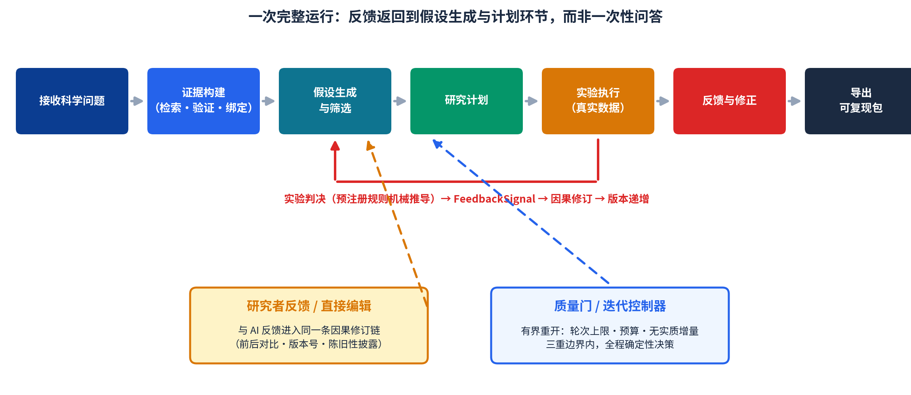
| 实际情况 | 系统发现了什么问题 | 本作品采取的处理 | 对后续假设或计划的影响 |
|---|---|---|---|
| 实验判决证伪假设（iris 案例，live） | 观测 accuracy=0.6 超过预注册阈值，否定预测 | 机械判决 falsifies → FeedbackSignal → 因果修订 v0→v1 | 假设方向被反转修订，6 字段 VersionDiff 入导出包 |
| 模型配额/路线故障（真实配额耗尽事件） | liveReady 只代表“有 key”而非“可调用” | 运行进入失败态 + 首页判断队列显示原因 + 断点恢复；首页健康条交叉核对近 24h 失败记录并阻断式预警 | 不再起步阶段静默失败或全部重来 |
| 进程被击杀 / 损坏检查点（故障注入 20/20） | 编排器崩溃、检查点损坏 | 租约收养恢复（实测 5033–5060ms）；损坏检查点 fail-closed 不产生假状态 | 同 (spec, seed, env) 双跑结果逐字节一致 |
| 证据不覆盖问题主体（P5 诚实探针） | 生成的假设未锚定问题主体（虚构物种题） | 主题覆盖 2-of-2 评估 → evidence-insufficient → 拒绝生成 → 诚实弃权导出 | 弃权记录完整留痕（P19） |
全量测试管线已建成（同一管线已完成 85+ 次真实研究运行）；125 题逐题执行按如下方式组织：单题运行方式——每题经统一入口发起一次完整研究运行，路线、种子、提示词版本与全部收据逐题留档；共同输出内容——每题输出作用域解析、已验证主张与来源快照清单、候选假设集（含证伪规格）、锦标赛排序与取舍记录、研究计划与可执行性校验结果、运行终态；总体评价方法——以确定性指标（来源核验率、主张绑定率、证伪完整性、计划可执行性、结构化反证覆盖）为主，模型裁判仅辅助且标注校准状态；证据不足、失败或需人工判断的题目如何保留——以终态原样保留并分类标记（evidence-insufficient 弃权 / failed 可断点恢复 / 需研究者执行），绝不省略或回填成功。
| 内容 | 本案例的实际情况 |
|---|---|
| 科学问题原文 | What mechanisms drive the horizontal transfer of antibiotic resistance genes in hospital environments?（医院环境中抗生素耐药基因水平转移的驱动机制） |
| 研究对象与关键变量 | 医院废水系统与表面生物膜中的 ARG 水平转移；关键变量：转移频率（T/D）、生物膜态/浮游态、消毒剂与药物残留浓度、噬菌体稳定性 |
| 已有认识与主要证据 | 12 个来源全部通过验证（DOI 解析 + 题名匹配）；抽取主张 42 条、41 条逐字绑定验证通过；证据覆盖接合/转导/转化三途径、生物膜促进作用、亚抑菌浓度 SOS 诱导等已有认识 |
| 尚未解决的知识缺口 | 非抗生素药物与物理剪切等因素的作用权重未知；多机制贡献权重无法区分（这正是判别性计划要回答的问题） |
| 需要保留的不确定性或争议 | 反证与限定关系共 11 条如实保留（限定 9 · 反对 1 · 削弱 1），未决反证在研究地图置顶呈现 |
| 编号 | 候选假设（核心陈述） | 主要依据 | 反对证据或替代解释 | 可检验预测 | 第一轮处理结果 |
|---|---|---|---|---|---|
| H-01 | 医疗器械表面高密度生物膜通过促进细胞紧密接触并诱导感受态，促进质粒、整合子等可移动元件的接合转移（机制：生物膜诱导感受态与接合） | 生物膜促进接合的文献共识（verified 主张绑定） | 未绑定到直接反对证据（如实保留空位）；替代解释：噬菌体转导（H-02） | DNase/Dispersin B 破坏基质后转移频率显著下降；医院生物膜中供体—受体空间聚集高于浮游培养 | 锦标赛胜出，进入研究计划（判别对象 A） |
| H-02 | 医院环境中的噬菌体在裂解周期中包装宿主 DNA（含耐药基因）并转导至新宿主，废水有机物增强噬菌体稳定性（机制：噬菌体转导） | 2 条 verified 主张支持 | 替代解释：生物膜接合（H-01）；有机物保护作用的域外推不确定 | 0.22µm 过滤病毒组分宏基因组中 ARG 丰度显著高于市政供水；体外模型证实耐药标记转移 | 锦标赛胜出，进入研究计划（判别对象 B） |
| H-03 | 废水中的非抗生素药物（镇痛/精神类）经氧化应激触发 RecA/LexA SOS 反应，间接促进 ICE 与原噬菌体的切除与转移（novelty：novel_speculation） | SOS 诱导机制文献 + 药物残留检测证据 | 诱导物与生态语境均为外推；与“抗生素诱导 SOS”假设的区分度理据已入档 | 高药物负荷废水中 recA/lexA 表达更高；抗氧化剂降低 HGT 频率 | 保留为候选（testable_with_data），首轮未进计划（判别优先级低于 A/B），留作迭代靶点 |
第一轮共生成 12 条候选假设，经聚类去重、主题门与完整性检查后 8 条进入成对锦标赛；全部取舍记录与理据入档。上表为前 3 条代表。
| 步骤 | 关键步骤 | 实际计划内容 | 该步骤能够支持、反对或区分什么 |
|---|---|---|---|
| 1 | 量化生物膜介导的接合效率 | CDC 生物膜反应器培养 72h 成熟生物膜；完整组 / DNase I（100µg/mL）+ Dispersin B（100µg/mL）基质破坏组 / 浮游共培养对照；选择性培养基计数转移接合子，计算转移频率 T/D | 区分 H-01：若破坏组转移频率显著下降，支持生物膜机制；无差异则削弱之 |
| 2 | 量化病毒组分与细菌组分的 ARG 负荷 | 医院废水 0.22µm 过滤分离病毒颗粒，宏基因组测序比较病毒/细菌组分的 ARG 丰度（对照：市政供水） | 区分 H-02：病毒组分高 ARG 负荷支持转导路径的贡献 |
| 3 | 评估噬菌体稳定性与转移潜力 | 在不同有机物负荷下测定噬菌体存活率与体外转移率 | 检验 H-02 的环境可行性边界 |
决策规则（预注册）：转移频率比 ≥10 且病毒/细菌 ARG 比 <0.1 → 生物膜机制主导、噬菌体贡献可忽略；2.0–10.0 之间 → 判为混合贡献并触发补充证据条款。可执行性校验通过，同时如实披露两条结构化警示（预测冲突矩阵未在机器层确立；自由文本数值 2.0/0.01 无结构化锚点，按 model-stipulated 披露）。
| 第一轮具体问题 | 判断依据 | 对科学结论或研究计划的影响 | 第二轮实际调整 |
|---|---|---|---|
| 反证关系标签错误率高：contradicts 盲评精确率仅 30%（上界），存在把主题无关主张标为反证与标签粒度混用两类缺陷 | 57 条关系的盲评抽检（同族裁判模型，上界口径） | 反证不可信会直接污染假设筛选与“当前判断” | schema-v2 标签纪律（显式关系枚举 + 允许弃权）+ 确定性主题门；live 复测 21 条关系 0 错误 |
| 假设生成只在“存在 verified 主张”时放行，未检查主张是否覆盖问题主体——诚实探针题（虚构物种）上产出 10 条自信假设 | 预声明诚实探针规则（第二轮评测中发现） | 科学诚实性缺口：无主体锚定的假设看似合理实为编造 | 证据阶段增加主题覆盖评估（两次独立不同措辞判断一致才成立）→ 标记 evidence-insufficient → 拒绝生成并诚实弃权 |
| 研究计划自由文本判据中的数值（2.0/0.01）无结构化预注册锚点 | 可执行性校验器结构化警示 | 数值来源不透明，复核时无法追溯 | 无锚点数值一律按 model-stipulated 披露；判据锚定结构化 testSpecs |
| 质量门再生成标志位为死代码——再生成实际未发生 | 独立对抗性审查 + 真实阶段回归测试 | “恰好一轮再生成”承诺落空 | 修复并用真实 Orchestrator 驱动真实阶段的回归测试锁定（断言第二轮假设确实持久化） |
| 变化内容 | 第一轮 | 第二轮 | 变化原因 | 实际结果 |
|---|---|---|---|---|
| 科学证据 | 逐字绑定机制已建立 | 绑定率 100%（170/170）保持；引用不受支持率 0% | 一致性维护 + 全量机器复验 | 达标并保持 |
| 候选假设 | 诚实探针题（P5）产出 10 条无主体锚定假设 | P5 被主题覆盖门拦截，诚实弃权；健康题（P1）正常生成 12 条 | 主题覆盖 2-of-2 门禁 | 诚实性缺口关闭（双向 live 验证：拦截 P5、不误伤 P1） |
| 假设比较与筛选 | 反证 contradicts 精确率 30%（上界） | 修复后 live 复测 21 条关系 0 错误；盲评总体精确率 54.5%（+邻接 63.6%） | 标签纪律 + 主题门 | 结构性错误模式消除；粒度边界如实披露 |
| 研究计划 | 可执行性检查已具备；自由文本数值无锚点 | 警示披露语义完善；判别性计划（表 13）通过校验 | 校验器披露规则强化 | 计划可执行 6/6（与强基线持平，如实披露） |
| 不确定性与边界 | 重发现指标初报 0.58 | 裁判栈重校后实测 0.226；裁判方差 4/5 任务 ≤0.045（最差 0.267 未达标，如实披露） | 对照归因实验 + 裁判校准（157 对 gold 零误差定阈） | 不通过改指标恢复数字；残余方差归因 agent 侧 |
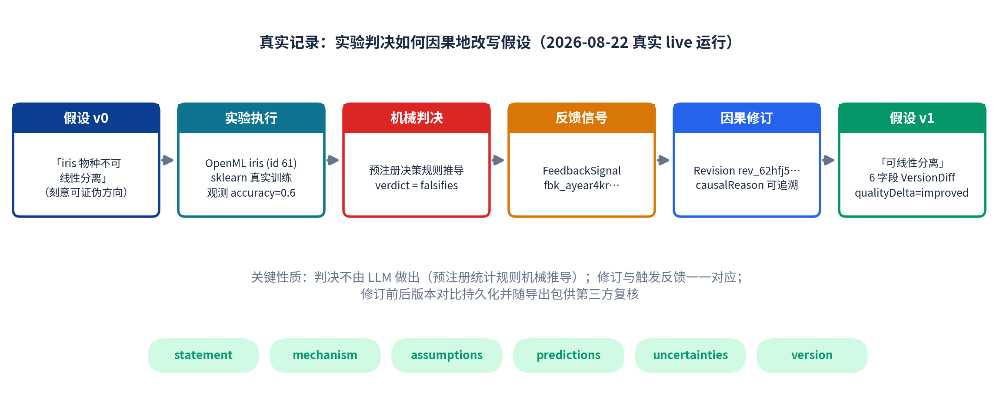
| 实际比较对象 | 保持相同的条件 | 采用的评价方法 | 本作品结果 | 对照结果 | 结论与代价 |
|---|---|---|---|---|---|
| baseline-direct（强模型单次结构化调用，glm-5.3） | 同一问题集（6 题）、同协议、同确定性检查器 | 来源核验/绑定率/反证覆盖/引用不受支持率/计划可执行性 | 绑定 100%、反证 104 条、引用不受支持 0% | 引用不受支持 85.0%、结构化反证 0、无主张模型 | 接地与反证为结构性优势；代价：单题 3.1–4.7 分钟 vs 基线约 65 秒 |
| baseline-rag（同族模型 + EuropePMC top-5 检索） | 同上；检索源切换已披露（且使基线更强） | 同上 | 同上 | 引用 19/19 可解析、计划可执行持平；无主张模型、无结构化反证 | 优势收窄为“深层绑定 + 反证 + 证伪审计链”；如实披露持平项 |
| MLR-Bench 锚点系统（o4-mini / deepseek-r1） | 同任务（N=5）、同裁判 | 裁判评分（idea/proposal/feasibility） | idea 7.00 / proposal 6.20 / 可行性 7.40 | o4-mini 7.80/7.40；deepseek-r1 7.60/7.00 | 可行性超过两个锚点；idea/proposal 差距如实归因（任务扁平化、新颖性呈现） |
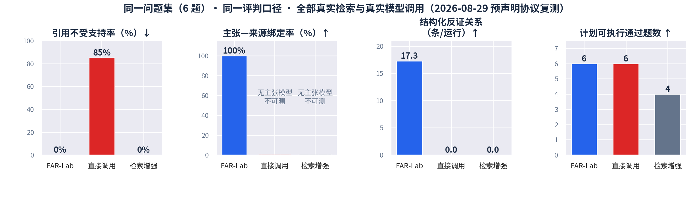
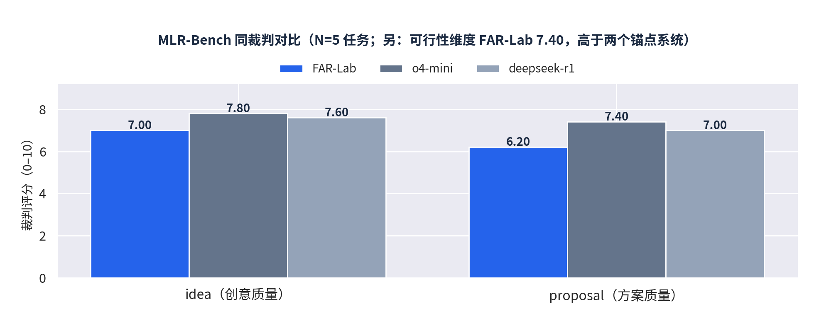
官方 125 题的逐题输出结果单独成册（见 P20 交付清单）；此处给出开发评测阶段已完成测试面的总体统计（判断口径与逐题输出一致，不以个案代替总体）：
| 结果情况 | 题目数量或比例 | 采用的判断口径 | 主要表现或原因 |
|---|---|---|---|
| 完整形成候选假设与研究计划 | 预声明题集 5/6（第二轮）；累计 52 次完整研究运行 | 管线全阶段完成且通过全部确定性检查 | 绑定率/完整性/可执行性见 P18 |
| 部分完成或证据不足 | 1/6（P5 诚实探针题） | 主题覆盖 2-of-2 评估 | 虚构物种题被正确识别为证据不覆盖主体 → 诚实弃权，记录完整 |
| 无法处理或需研究者判断 | 湿实验域问题（定性边界） | 范式诚实原则 | 计划以预注册协议输出，执行与证据记录归属研究者，系统不模拟执行 |
| 重复运行或稳健性表现 | 故障注入 20/20；同 (spec, seed, env) 双跑逐字节一致 | 确定性复算 | 租约收养恢复 5033–5060ms；损坏检查点 fail-closed |
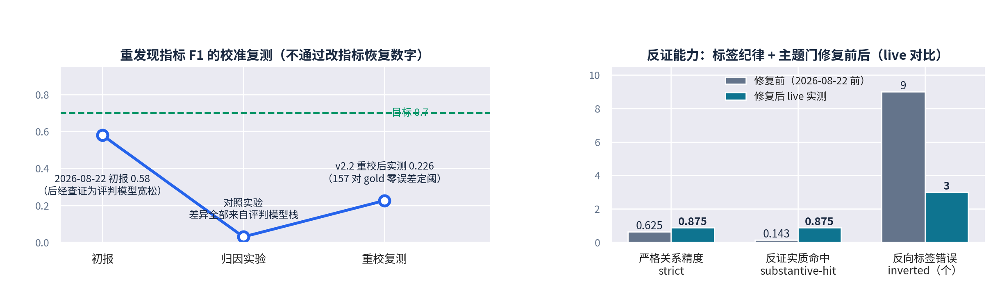
| 典型失败或边界问题 | 实际表现 | 原因分析 | 目前能够做到的程度 |
|---|---|---|---|
| 证据稀疏/无覆盖域 | 无法生成有锚假设 | 文献覆盖本身不足 | 诚实弃权 + 缺口说明，而非编造 |
| 反证粒度边界（supports vs qualifies） | 盲评精确率 54.5%（+邻接 63.6%） | 标签语义粒度在科学文本上固有模糊 | 粒度差异保留并披露；等待跨域复测 |
| 新颖性与重发现的张力 | 2/5 任务的 top 假设机制不同于既定发现 | 系统被设计为生成新候选而非复述 | 如实披露；重发现 F1 0.226（目标 0.7 未达） |
| 裁判方差 | 最差任务 swing 0.267（目标 0.15） | agent 侧分解方差（crispr 类任务） | 4/5 任务 ≤0.045；残余披露并给出杠杆 |
| 跨域泛化 | 跨 6 域封存题集（材料/天体/电化学/计算化学/经济学/能源）协议已预声明并 salted-sha256 封存 | 防止“先看答案再跑” | 协议已封存，评测执行中（如实披露当前进度） |
| 交付项目 | 实际提交内容或入口 |
|---|---|
| 源码、环境、依赖与运行方法 | 开源仓库（Apache-2.0）：github.com/yry1816186-pixel/FAR-Lab；npm install && npm run build 后 far research start "问题" 一分钟内复现主流程；npm test 全量确定性验证（2348 项通过、0 失败）。工程不变量：产品运行时依赖仅 zod；实验运行时为 uv 锁定的独立 Python sidecar（版本锁定 + 锁文件哈希入运行记录）；桌面壳 Tauri v2。 |
| Qwen 模型、调用方式及凭证或截图 | 调用方式见 P7（百炼 DashScope 适配器，每次调用写入收据账本）；百炼平台调用记录截图见本节凭证区（材料中不含 API Key）。 |
| 官方 125 题逐题输出结果文档 | 逐题输出结果单独成册（单题运行方式、共同输出内容与判断口径见 P13；证据不足、失败或需人工判断的题目原样保留，未省略）。 |
| 代表案例的输入、两轮结果和必要日志 | 见 P14–P17；全部中间对象可在随附源码包的运行数据库快照与证据材料目录中复核（对照评测报告、盲评记录、修订链记录）。 |
| 测试 API、示例请求与可交互前端 | HTTP API（/api/v1：发起运行/查询状态/获取对象）+ Web 工作台（研究地图单画布）；仓库 scripts/serve.mjs 一键启动；离线确定性路线可在无密钥环境完成全流程演示（界面显式标识 OFFLINE）。 |
| 可选演示视频（≤10 分钟） |
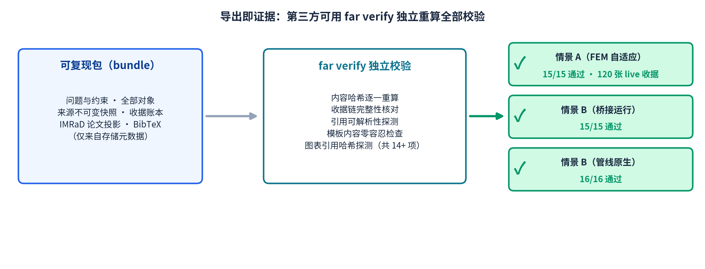
far verify 独立校验；三个真实场景的校验结果（15/15、15/15、16/16 通过；情景 A 含 120 张 live 收据核对）。知识产权声明：本作品（FAR-Lab）由参赛团队独立开发，以 Apache-2.0 许可证开源，拥有完整独立知识产权；文中引用的文献元数据来自 OpenAlex/arXiv/CrossRef/EuropePMC 等公开来源，实验数据来自 OpenML 公开数据集（许可与谱系已持久化留档）。